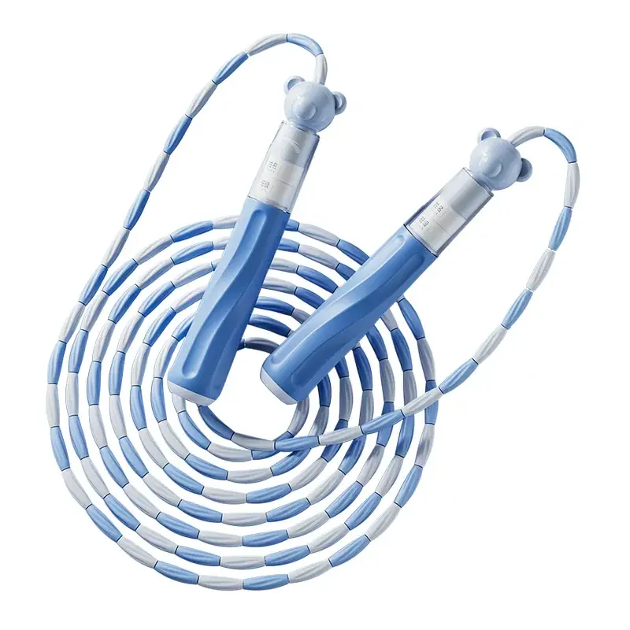
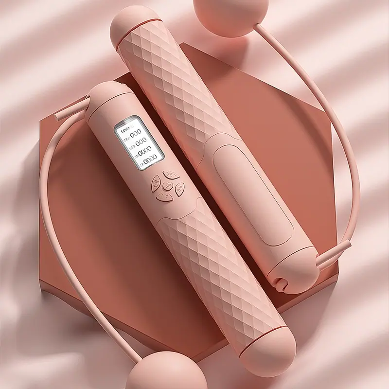

PVC- Cordes à sauter revêtues et en fil d'acier, avec poignées en ABS, en aluminium et en EVA. Compteur LCD, compteur mécanique, modèles sans fil et pour enfants ; la longueur de la corde, la couleur des poignées et le logo sont tous personnalisés à la commande.
Il existe trois constructions de corde, et elles ne sont pas interchangeables. La corde gainée de PVC est le best-seller : indolore quand elle frappe le tibia, et parfaite pour les écoles et le commerce général. La corde en câble d'acier est plus rapide et résiste bien mieux à l'usure : c'est ce que paient les clients compétition et CrossFit. La corde à perles garde un arc visible dans l'air, si bien qu'un débutant voit le rythme au lieu de le deviner. Nommez le client et nous vous présenterons d'abord le bon cœur.
Le comptage divise la gamme tout aussi nettement. Les compteurs mécaniques résistent aux chutes et n'ont pas besoin de pile ; les compteurs LCD offrent un affichage lisible et sont le choix par défaut des coffrets cadeaux ; les versions sans fil n'ont aucune corde, ce qui permet de s'entraîner dans un appartement sans toucher le plafond ni les meubles. Les poignées vont de 12 cm pour les enfants à 19,3 cm en format adulte : la même corde peut donc être faite pour un enfant ou pour une compétition.
Longueur de corde, couleur de poignée, impression et emballage se règlent par commande, et le boîtier du compteur peut porter votre logo. Les formats enfant et adulte sortent de la même ligne : une école ou une chaîne de salles peut donc commander un carton mixte, à condition que chaque variante atteigne le minimum. La quantité minimale est de 100 pièces, avec un échantillon en 7 jours environ.

Fabriqué sur commande

ABS, EVA · Poignée 19,3*3.1cm

ABS+PVC+PC+TPE, PVC

PVC + ABS · Poignée 12*2cm

ABS+PVC+PC+TPE

PP, PVC, caoutchouc souple · Poignée 14,8 ×2.5cm

ABS, PVC · Poignée 14,5*5.2cm
Les questions que les acheteurs nous posent le plus, vues de nos propres lignes :
Envoyez-nous votre dessin, le prix souhaité ou une photo : nous vous répondrons dans les 24 heures avec un devis et un plan d'échantillonnage. Quantité minimale de commande : 100 pièces.
Demander un devis